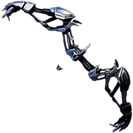

Tribu: Ninguna
Arma/s: Ninguna
Raza: Humana
Tipo de sangre: A+
Personalidad: Tranquilo
Energía ambiental: Rayo
Aura: No
Niveles de pelea: TODAS LAS TEMPORADAS - 13400 PL
Descripción: hermano de Severete y es un hombre tranquilo que busca poner fin a todos los conflictos del mundo. Sabe la verdad del mundo.